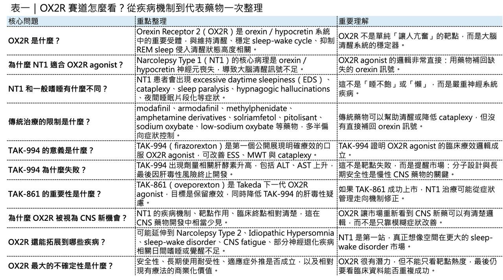
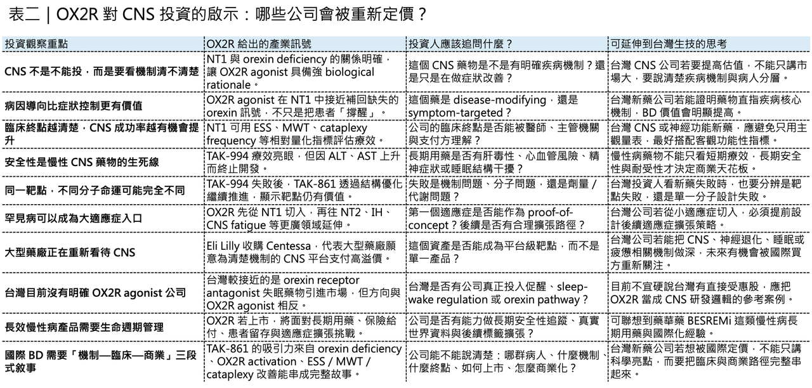

【 OX2R 爆紅：從發作性嗜睡症，到下一代 CNS 藥物想像空間】
分享這篇分析
把這篇文章轉給關注生技醫藥、公司研究或資本市場的朋友。
中樞神經系統藥物開發，很久沒有出現一個這麼清楚、這麼有生物學邏輯、又這麼接近臨床突破的靶點。

這個靶點就是 Orexin Receptor 2（OX2R）。
如果只用一句話解釋 OX2R 的重要性，它不是單純讓人「比較不想睡」的受體，而是大腦維持清醒、穩定睡眠—覺醒週期、避免突然進入 REM sleep 的關鍵開關之一。
這也是為什麼 OX2R agonist 近年在全球 CNS 領域快速升溫。
它最明確的第一個戰場，是 Narcolepsy Type 1（NT1，第一型發作性嗜睡症／猝睡症）。這類患者不是一般熬夜後的疲倦，也不是單純「愛睡覺」，而是一種嚴重慢性神經系統疾病。病人可能在白天任何時間突然無法控制地入睡，也可能在大笑、憤怒、驚訝等情緒刺激下，發生肌肉張力突然消失的 cataplexy（猝倒）。
過去治療多半只能症狀管理。
但 OX2R agonist 的出現，讓 NT1 第一次有機會走向更接近病因層級的治療。因為 NT1 的核心病理，正是 orexin／hypocretin 訊號缺失。這就是這個靶點最迷人的地方：它不是在模糊地「調節神經」，而是直接補上大腦清醒系統中缺失的訊號。

01｜NT1 不是犯困，而是大腦清醒開關失靈
💤 Narcolepsy Type 1 最容易被誤解。
很多人聽到發作性嗜睡症，會直覺以為只是白天很容易睡著。但對患者來說，這個疾病遠比「愛睏」嚴重。NT1 的核心症狀包括：白天過度嗜睡，也就是 excessive daytime sleepiness（EDS）。患者可能在上課、開會、工作、搭車，甚至進行日常活動時，突然進入難以抵抗的睡眠狀態。
第二個更具標誌性的症狀是 cataplexy。這是 NT1 最典型、也最具診斷意義的表現。患者在強烈情緒刺激下，例如大笑、憤怒、驚訝、興奮時，會突然出現肌肉張力喪失。輕微時可能只是臉部鬆垮、膝蓋無力、說話含糊；嚴重時可能直接癱倒在地。但最特別的是，病人通常意識清醒。
此外，患者還可能出現 sleep paralysis（睡眠麻痺）、hypnagogic hallucinations（入睡前幻覺）、夜間睡眠片段化，以及 REM sleep 侵入清醒狀態等問題。
🧠 這些症狀背後的核心，是大腦失去了穩定清醒與睡眠狀態切換的能力。
研究已經非常清楚地指出，NT1 與 orexin／hypocretin 神經元喪失密切相關。Orexin 是由下視丘特定神經元分泌的神經胜肽，對維持覺醒、調節警覺性、穩定 sleep-wake cycle 具有關鍵作用。NT1 患者常見腦脊髓液中 hypocretin-1 顯著降低，典型 cataplexy 與 CSF hypocretin-1 ≤110 pg/mL 高度相關；健康人與多數非 NT1 嗜睡疾病患者，CSF hypocretin-1 通常高於 200 pg/mL。
這也是為什麼 NT1 不是心理問題，也不是生活習慣問題。
它是一個大腦覺醒系統的生物學缺陷。
如果把大腦比喻成一個城市，orexin 系統就像維持白天交通秩序的中控中心。正常情況下，它幫助大腦保持清醒，避免睡眠與 REM sleep 在不該出現的時間闖入。但在 NT1 裡，這套中控系統失靈，清醒、睡眠、REM sleep 的邊界開始崩解。
過去醫師能做的，是用藥物把患者「撐醒」、壓低 cataplexy、改善夜間睡眠。
例如 modafinil、armodafinil、methylphenidate、amphetamine derivatives、solriamfetol 可以促進清醒；pitolisant 可透過 histamine H3 receptor inverse agonism 改善 EDS 與 cataplexy；sodium oxybate 與 low-sodium oxybate 則可改善夜間睡眠與 cataplexy。這些藥物對許多患者有幫助，但本質上多半仍是症狀管理，並沒有直接補回缺失的 orexin 訊號。
這也是 OX2R agonist 之所以被高度期待的原因，它不是單純刺激中樞神經，它是試圖在受體層級補回 NT1 最核心的 orexin 訊號。

02｜OX2R 為什麼是關鍵？因為它更像「清醒穩定器」
🔑 Orexin 主要透過兩種 G protein-coupled receptors 發揮作用：Orexin Receptor 1（OX1R） 與 Orexin Receptor 2（OX2R）。
兩者都重要，但在 narcolepsy 與 wakefulness 的藥物開發上，OX2R 特別受到重視。原因在於，OX2R 與清醒維持、睡眠—覺醒穩定、REM sleep 抑制之間有更直接的關係。Orexin neuron 會投射到多個維持覺醒的腦區，例如 histaminergic、noradrenergic、dopaminergic、serotonergic、cholinergic 系統，提供一種穩定清醒狀態的 excitatory tone。當 orexin 訊號消失，清醒狀態就變得不穩，患者容易突然掉入睡眠或 REM sleep。
所以 OX2R agonist 的治療理念非常直覺：既然 NT1 是 orexin 訊號缺失，那就用小分子藥物直接活化 OX2R，模擬天然 orexin 的作用，補償內源性訊號不足。
這和傳統中樞興奮劑不同，傳統促醒藥物比較像是把大腦推得更清醒；OX2R agonist 則比較像是恢復大腦原本應該有的清醒穩定系統。這個差異很重要，因為如果 OX2R agonist 的療效與安全性被確認，NT1 的治療邏輯可能從「白天想辦法不要睡著」轉向「恢復睡眠—覺醒週期的穩定」。這是從症狀控制，往疾病機制修正前進。
03｜TAK-994：第一道曙光，也第一個安全性警訊
⚠️ OX2R agonist 真正讓產業興奮，第一個里程碑是 Takeda 的 TAK-994（firazorexton）。TAK-994 是第一個進入臨床並公開展現明確療效的口服 OX2R agonist。它在 NT1 的 Phase 2 試驗中，顯示了非常驚人的臨床效果。
這項隨機、雙盲、安慰劑對照 Phase 2 試驗納入 NT1 患者。結果顯示，TAK-994 在 Epworth Sleepiness Scale（ESS） 上大幅改善白天嗜睡；在 Maintenance of Wakefulness Test（MWT） 中，也顯著延長患者維持清醒的時間。更重要的是，它同時顯著降低 cataplexy 發作頻率。這代表 OX2R agonist 不只是讓人比較醒，還可能真正改善 NT1 的核心症狀組合。
原本這幾乎是 CNS 藥物開發裡少見的漂亮故事。
💤 一個病因清楚的疾病。
💤 一個機制高度吻合的靶點。
💤 一個口服小分子。
💤 一個在 Phase 2 就看出明確症狀改善的療法。
但 TAK-994 最後沒有走到終點，試驗中出現劑量相關的肝酵素升高，也就是 ALT、AST 上升的安全性問題。Takeda 最終因肝毒性風險終止 TAK-994 的開發。Takeda 後續指出，目前假說認為 TAK-994 相關 drug-induced liver injury 可能與 reactive metabolites 有關，而不太像是 OX2R 活化本身的 on-target toxicity，因為 orexin receptors 並不表現在人類 hepatocytes 或多數免疫細胞上。
這一點很關鍵，如果 TAK-994 的肝毒性是 OX2R agonist 這個機制本身造成，那整個靶點會被打上很大問號。但如果肝毒性更多是特定分子的 off-target 或代謝物問題，那代表 OX2R agonist 類別仍有機會透過結構優化被救回來。
這也是 TAK-994 雖然失敗，卻沒有摧毀 OX2R 賽道的原因。它證明了療效，也暴露了藥物化學的風險。換句話說，TAK-994 不是 OX2R 的終點，而是這個靶點的第一堂臨床課。
04｜TAK-861：如果安全性成立，NT1 標準治療可能被改寫
🚀 TAK-994 之後，Takeda 推進下一代 OX2R agonist：TAK-861（oveporexton）。
這個分子現在已經成為整個 OX2R 賽道最重要的臨床資產之一。TAK-861 的核心任務很清楚：保留 TAK-994 的療效，同時避開前一代分子的肝毒性問題。從目前臨床資料看，TAK-861 的確把 OX2R agonist 推進到一個更成熟的位置。2025 年，Takeda 公布 TAK-861 在 NT1 的 Phase 2b 結果，並發表於 New England Journal of Medicine。研究顯示，TAK-861 能顯著改善 NT1 患者的 wakefulness、sleepiness 與 cataplexy，且整體耐受性良好。
更重要的是，2025 年 7 月，Takeda 宣布 TAK-861 在兩項全球 Phase 3 樞紐試驗中達成所有主要與次要終點。這兩項試驗均為隨機、雙盲、安慰劑對照研究，結果顯示 TAK-861 在多個劑量組中都能帶來具統計顯著與臨床意義的改善，並且安全性表現大致延續前期研究的可接受輪廓。Takeda 也表示正加速準備全球法規申請。這代表什麼？代表 OX2R agonist 已經從「概念驗證」進到「可能改寫標準治療」的階段。如果 TAK-861 順利獲准，它可能成為第一個真正針對 NT1 底層 orexin deficiency 的口服藥物。
這對患者很重要，對 CNS 藥物開發也很重要。因為 CNS 藥物最常見的問題，就是機制不夠清楚、疾病異質性太高、臨床終點噪音太大、安慰劑效應太強。很多 CNS 管線做到後期才失敗，就是因為生物學假說和臨床終點之間連不起來。但 NT1 不一樣。NT1 的 orexin deficiency 病理相對明確，OX2R agonist 的機制與症狀高度吻合，臨床終點也相對可量化，包括 ESS、MWT、cataplexy frequency 等。這讓 TAK-861 成為 CNS 領域裡少數具備高生物學一致性的開發故事。
它不是一個「希望能改善情緒」或「可能改善認知」的模糊 CNS 訊號。它是一個從神經胜肽缺失、受體活化、睡眠—覺醒穩定，到臨床症狀改善都能連起來的故事。
這也是為什麼大型藥廠與投資人會高度關注 OX2R。
05｜OX2R 的想像空間，不只 NT1，而是整個 sleep-wake disorder 市場
🌙 雖然 NT1 是最清楚的第一個適應症，但 OX2R 的真正想像空間不只在 NT1。
更大的問題是：如果 OX2R agonist 能安全、有效地穩定清醒系統，它是否也能用於其他 sleep-wake dysregulation 疾病？
💤 第一個自然延伸，是 Narcolepsy Type 2（NT2）。NT2 同樣有白天過度嗜睡，但通常沒有典型 cataplexy，且 CSF hypocretin-1 不一定低到 NT1 那種程度。這讓 NT2 的病因比 NT1 更複雜，也使 OX2R agonist 的臨床效果更需要驗證。但從症狀機制來看，NT2 仍屬於中樞嗜睡疾病，OX2R agonist 有合理探索空間。
💤 第二個是 Idiopathic Hypersomnia（IH，特發性嗜睡症）。IH 患者常常出現長時間睡眠、醒來困難、sleep inertia、白天持續疲倦與嗜睡。這類患者不一定有 orexin 缺失，但可能存在覺醒系統調節異常。若 OX2R agonist 能提高覺醒穩定性，就有機會成為新的治療方向。現在 IH 的治療選擇仍有限，low-sodium oxybate 是少數獲 FDA 核准用於 IH 的藥物，因此市場對新機制療法有明確需求。
💤 第三個，是 shift work disorder、circadian rhythm disorder，或其他睡眠—覺醒節律失調狀態。這裡要特別小心，因為這些適應症未必都能靠 OX2R agonist 解決。晝夜節律牽涉 suprachiasmatic nucleus、melatonin、光照、行為節律與多種神經系統調控。OX2R agonist 可能在特定情境中幫助白天清醒，但不等於可以單獨重設生理時鐘。
💤 第四個，是更廣泛 CNS 疾病中的 fatigue、apathy、cognitive slowing 與 wakefulness impairment。例如 Parkinson’s disease、Alzheimer’s disease、depression、bipolar disorder、schizophrenia、多發性硬化症或癌症相關疲憊，很多患者都會伴隨日間嗜睡、覺醒不足、睡眠片段化或認知表現下降。
這些領域確實有想像空間，但也要非常謹慎。因為這些疾病的疲憊與認知障礙，不一定是單純 orexin 訊號不足造成。它可能涉及神經退化、發炎、藥物副作用、睡眠呼吸中止、情緒症狀、代謝異常，或多重病理交互作用。所以 OX2R agonist 在這些疾病中，不能直接套用 NT1 的邏輯。
更合理的看法是：OX2R agonist 可能在某些 CNS 疾病的特定症狀維度中扮演輔助角色，例如改善 wakefulness、降低日間嗜睡、提高白天功能與認知表現，但它未必會成為疾病本身的根本療法。
這也是 CNS 投資最重要的判斷：要分清楚 disease-modifying therapy 和 symptom-targeted therapy。在 NT1 裡，OX2R agonist 接近病因修正。在其他 CNS 疾病裡，它可能更多是症狀改善。兩者估值邏輯完全不同。
06｜全球藥廠為什麼開始搶 OX2R？因為它可能是下一個 CNS 平台級靶點
💊 OX2R 的熱度，不只來自 Takeda。
近年越來越多公司開始布局 orexin agonist。Centessa Pharmaceuticals 的 cleminorexton（ORX750） 是其中最受關注的競品之一。Centessa 也布局 ORX142、ORX489 等後續 OX2R agonist，目標涵蓋 NT1、NT2、IH，以及其他神經、神經退化與神經精神疾病。2026 年 3 月，Eli Lilly 宣布以最高 78 億美元收購 Centessa Pharmaceuticals，目的就是切入 sleep-wake disorder 與 orexin 藥物市場。Reuters 報導指出，Centessa 的 lead drug cleminorexton 正在中期研究中，目標適應症包括 narcolepsy 與 idiopathic hypersomnia；這筆交易也被市場解讀為大型藥廠對 orexin 賽道的強力背書。
這個收購訊號很重要。
Eli Lilly 近年最大的成功來自 GLP-1 代謝藥物，但它仍選擇用高額併購進入 OX2R／sleep-wake disorder 領域，代表大型藥廠不只看到了 NT1 這個相對小眾市場，而是看到了更大的 CNS 症狀維度：清醒、疲憊、睡眠穩定、認知功能與白天活動能力。Alkermes 也有 OX2R agonist portfolio，例如 alixorexton 以及其他後續分子，開發方向涵蓋 NT1、NT2、IH、ADHD 以及神經退化相關疲憊等可能適應症。這些布局代表 OX2R 已經從單一罕見病機制，逐步變成 CNS pipeline strategy 的一部分。這就是 OX2R 最值得關注的產業位置。它具備三個少見特徵：
💊 第一，靶點與疾病機制連結清楚。NT1 的 orexin deficiency 讓 OX2R agonist 有非常強的 biological rationale。
💊 第二，臨床終點可量化。ESS、MWT、cataplexy frequency 都比許多 CNS 終點更具可操作性。
💊 第三，適應症可擴張。從 NT1 出發，可以向 NT2、IH、sleep-wake disorder、CNS fatigue、認知與白天功能障礙延伸。
這也是為什麼 OX2R 不只是「一個 narcolepsy 靶點」，它有機會成為 CNS 領域少數能從罕見病切入，再往大適應症延伸的平台級靶點。
07｜但 OX2R 還有三個關鍵風險，不能只看想像空間
OX2R 很有吸引力，但不能只看上行空間，這個賽道至少有三個風險必須注意。
🧩 第一，是安全性。
TAK-994 的肝毒性雖然可能不是 OX2R on-target effect，但它已經提醒市場：這類藥物不只是受體活化就好，分子本身的代謝物、肝臟安全性、長期使用耐受性都非常重要。NT1 是慢性疾病，患者可能需要長期服藥多年甚至數十年。只要藥物存在累積性毒性、肝酵素波動、心血管風險、精神症狀或睡眠結構干擾，商業天花板就會被壓低。
🧩 第二，是適應症外推風險。
NT1 是最清楚的病因邏輯，但 NT2、IH、疲憊、認知障礙、神經退化疾病並不一定是 orexin 缺失造成。若企業把 NT1 的成功直接外推到所有 CNS 疲憊場景，很容易高估市場。
🧩 第三，是商業化定位。
現有 narcolepsy 市場已經有 modafinil、armodafinil、solriamfetol、pitolisant、sodium oxybate、low-sodium oxybate、once-nightly sodium oxybate 等治療選擇。OX2R agonist 如果獲准，當然有機會改寫 NT1 標準療法，但它仍需要證明相對現有療法的療效、安全性、便利性、價格與保險給付優勢。
尤其在美國市場，narcolepsy 藥物本來就屬於高價 specialty medicine。新藥若要快速滲透，必須不只在臨床試驗中顯著有效，也要讓醫師與支付方相信，它能帶來比現有療法更好的整體價值。所以 OX2R 的投資邏輯，不是「靶點很新，所以一定成功」。
更合理的看法是：TAK-861 如果成功上市，會確認 OX2R agonist 在 NT1 的疾病機制價值。後續競品如果能在安全性、給藥便利性、日間功能、認知改善或更廣適應症上做出差異化，整個賽道才會真正放大。
【結語｜OX2R 不是單純促醒藥，而是 CNS 新藥開發重新被相信的案例】
OX2R 之所以重要，不只是因為它有機會治療 NT1，更重要的是，它讓 CNS 藥物開發重新出現一個很漂亮的範本。
✨疾病病理清楚。
✨靶點機制清楚。
✨藥物作用與症狀改善能接上。
✨臨床終點相對可量化。
第一個適應症足夠明確，後續又有擴張空間，這種組合，在 CNS 領域其實並不常見。TAK-994 證明 OX2R agonist 的療效可以成立，但也提醒市場安全性是慢性 CNS 藥物不可跨越的紅線。TAK-861 則把這個靶點推進到可能改寫 NT1 治療標準的階段。Centessa 被 Eli Lilly 高價收購，則代表大型藥廠已經開始把 OX2R 視為下一個值得重金布局的 CNS 入口。
接下來真正要看的，不只是 TAK-861 能不能獲准上市。更重要的是，OX2R agonist 能不能從 NT1 這個病因最清楚的起點，走向 NT2、Idiopathic Hypersomnia、CNS fatigue、認知功能與更廣泛 sleep-wake disorder。如果可以，OX2R 就不只是發作性嗜睡症的新療法，它可能會成為 CNS 領域下一個平台級靶點。但如果要冷靜看，這個故事仍然要回到藥物開發最基本的問題：
✨療效能不能維持？
✨安全性能不能長期成立？
✨能不能在更大、更多元的病人族群中重複成功？
CNS 市場從來不缺想像空間，真正稀缺的是能把想像空間變成臨床證據的分子，而 OX2R，正是近年少數最接近這個答案的 CNS 靶點之一。我們也期望台灣能出現相關公司一起走向世界！
參考資料：
[0]: 各公司官網＆公開資料
[1]:
Intermediate hypocretin-1 cerebrospinal fluid levels and typical cataplexy: their significance in the diagnosis of narcolepsy type 1
AbstractStudy Objectives. The diagnosis of narcolepsy type 1 (NT1) is based upon the presence of cataplexy and/or a cerebrospinal fluid (CSF) hypocretin-1/
academic.oup.com
[2]:
Lock
Narcolepsy, a rare neurological disorder believed to have an autoimmune etiology, necessitates lifelong management. This study aimed to provide evidence supporting the safety of pharmacological treatment for narcolepsy. Five-year data on pitolisant, ...
pmc.ncbi.nlm.nih.gov
[3]:
[4]:
Oral Orexin Receptor 2 Agonist in Narcolepsy Type 1 | NEJM
Narcolepsy type 1 is caused by severe loss or lack of brain orexin neuropeptides. We conducted a phase 2, randomized, placebo-controlled trial of TAK-994, an oral orexin receptor 2–selective agonis...
www.nejm.org
[5]:
YouTube
Findings Indicate Orexin Receptor 2 as Promising Novel Biologic Target for Future Development of Narcolepsy Type 1 Treatments
www.takeda.com
[6]:
YouTube
Explore the Phase 2b trial results of oveporexton (TAK-861) published in NEJM, showing significant improvements in excessive daytime sleepiness (EDS), reductions in cataplexy events and clinically meaningful improvements in disease severity and quality of
www.takeda.com
引用本文
若在簡報、報告或社群討論引用，建議附上 Drugnews 原文連結。
Drugnews 編輯部，〈OX2R 爆紅：從發作性嗜睡症，到下一代 CNS 藥物想像空間〉，Drugnews｜藥時事，2026/05/24，https://drugnews.com.tw/articles/2026-05-24-ox2r-cns-narcolepsy-opportunity.html